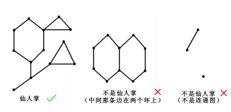

BZPRO
#4784. [Zjoi2017]仙人掌
内存限制：512 MiB
时间限制：10 Sec
提交
提交记录
讨论
题目描述
如果一个无自环无重边无向连通图的任意一条边最多属于一个简单环，我们就称之为仙人掌。所谓简单环即不经过
重复的结点的环。

现在九条可怜手上有一张无自环无重边的无向连通图，但是她觉得这张图中的边数太少了，所以她想要在图上连上
一些新的边。同时为了方便的存储这张无向图，图中的边数又不能太多。经过权衡，她想要加边后得到的图为一棵
仙人掌。不难发现合法的加边方案有很多，可怜想要知道总共有多少不同的加边方案。两个加边方案是不同的当且
仅当一个方案中存在一条另一个方案中没有的边。
输入格式
多组数据，第一行输入一个整数T表示数据组数。
每组数据第一行输入两个整数n,m，表示图中的点数与边数。
接下来m行，每行两个整数u,v(1≤u,v≤n,u!=v)表示图中的一条边。保证输入的图
联通且没有自环与重边
Sigma(n)<=5*10^5,m<=10^6,1<=m<=n*(n-1)/2
输出格式
对于每组数据，输出一个整数表示方案数，当然方案数可能很大，请对998244353取模后
输出。
样例
样例输入
2
3 2
1 2
1 3
5 4
1 2
2 3
2 4
1 5
样例输出
2
8
对于第一组样例合法加边的方案有 {}, {(2,3)}，共 2 种。
数据范围与提示